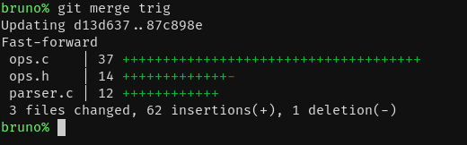

Trabalhando Com Branches (2)
Esse capítulo é a parte dois do exemplo de branches.
Ainda No Computador Do Colega
O colega vai adicionar trigonometria inversa também:
Arquivo ops.h:
#define OP_COS_SYM "cos"
#define OP_TAN_SYM "tan"
+#define OP_ARCSIN_SYM "arcsin"
+#define OP_ARCCOS_SYM "arccos"
+#define OP_ARCTAN_SYM "arctan"
enum operation {
op_add,
op_sub,
op_mul,
op_div,
op_sin,
op_cos,
- op_tan
+ op_tan,
+ op_arcsin,
+ op_arccos,
+ op_arctan
};
Arquivo ops.c:
#include "ops.h"
+#include <math.h>
int op_exec(enum operation op, struct stack **stack)
{
...
stack_push(stack, tan(left));
}
break;
+ case op_arcsin:
+ success = stack_pop(stack, &left);
+ if (success) {
+ stack_push(stack, asin(left));
+ }
+ break;
+ case op_arccos:
+ success = stack_pop(stack, &left);
+ if (success) {
+ stack_push(stack, acos(left));
+ }
+ break;
+ case op_arctan:
+ success = stack_pop(stack, &left);
+ if (success) {
+ stack_push(stack, atan(left));
+ }
+ break;
}
return success;
O colega vai ver se não ocorre algum erro de compilação (no Linux):
gcc -o ops.o -c ops.c
Perfeito, não ocorre.
Precisamos alterar o parser também.
Arquivo parser.c:
} else if (advance_op(parser, OP_DIV_SYM, sizeof(OP_DIV_SYM))) {
*output = op_div;
} else if (advance_op(parser, OP_SIN_SYM, sizeof(OP_SIN_SYM))) {
*output = op_sin;
} else if (advance_op(parser, OP_COS_SYM, sizeof(OP_COS_SYM))) {
*output = op_cos;
} else if (advance_op(parser, OP_TAN_SYM, sizeof(OP_TAN_SYM))) {
*output = op_tan;
+ } else if (advance_op(parser, OP_ARCSIN_SYM, sizeof(OP_ARCSIN_SYM))) {
+ *output = op_arcsin;
+ } else if (advance_op(parser, OP_ARCCOS_SYM, sizeof(OP_ARCCOS_SYM))) {
+ *output = op_arccos;
+ } else if (advance_op(parser, OP_ARCTAN_SYM, sizeof(OP_ARCTAN_SYM))) {
+ *output = op_arctan;
} else {
success = 0;
}
return success;
Vamos ver se não ocorre algum erro de compilação (no Linux):
gcc -o parser.o -c parser.c
Perfeito, não ocorre.
O colega vai testar também (precisa de -lm para usar funções math):
gcc main.o parser.o stack.o ops.o -lm -o rpn-calc
Vamos fazer três testes: 1 arccos, 0 arcsin, e 0 arctan, que devem
resultar em 0, 0, e 0 respectivamente.

Funciona! Agora ele pode subir as modificações:
git add .
git status
git commit -m 'implementada trigonometria inversa'
git push github trig
O colega está pronto, e vai mandar as mudanças pra branch master. Primeiro,
ele vai trocar para ela.
git checkout master
Após isso, ele vai checar se o repositório local está atualizado.
git pull github master

Ele está atualizado. Ele vai executar o merge.
git merge trig

Não é necessário resolver conflitos. O colega vai publicar as mudanças.
git push github master
Voltando Para Nosso Computador
Temos que estar na branch exp. Vamos fazer mais uma mudança, vamos
adicionar logaritmos.
Arquivo ops.h:
#define OP_POW_SYM "^"
#define OP_EXP_SYM "exp"
+#define OP_LOG_SYM "log"
+#define OP_LN_SYM "ln"
enum operation {
op_add,
op_sub,
op_mul,
op_div,
op_pow,
- op_exp
+ op_exp,
+ op_log,
+ op_ln
};
Depois, vamos implementar a execução dessas operações:
Arquivo ops.c:
#include "ops.h"
+#include <math.h>
int op_exec(enum operation op, struct stack **stack)
{
...
stack_push(stack, exp(left));
}
break;
+ case op_log:
+ success = stack_pop(stack, &right) && stack_pop(stack, &left);
+ if (success) {
+ stack_push(stack, log(right) / log(left));
+ }
+ break;
+ case op_ln:
+ success = stack_pop(stack, &left);
+ if (success) {
+ stack_push(stack, log(left));
+ }
+ break;
}
return success;
Vamos ver se não ocorre algum erro de compilação (no Linux):
gcc -o ops.o -c ops.c
Perfeito, não ocorre.
Precisamos alterar o parser também.
Arquivo parser.c:
} else if (advance_op(parser, OP_MUL_SYM, sizeof(OP_MUL_SYM))) {
*output = op_mul;
} else if (advance_op(parser, OP_DIV_SYM, sizeof(OP_DIV_SYM))) {
*output = op_div;
} else if (advance_op(parser, OP_POW_SYM, sizeof(OP_POW_SYM))) {
*output = op_pow;
} else if (advance_op(parser, OP_EXP_SYM, sizeof(OP_EXP_SYM))) {
*output = op_exp;
+ } else if (advance_op(parser, OP_LOG_SYM, sizeof(OP_LOG_SYM))) {
+ *output = op_log;
+ } else if (advance_op(parser, OP_LN_SYM, sizeof(OP_LN_SYM))) {
+ *output = op_ln;
} else {
success = 0;
}
return success;
Vamos ver se não ocorre algum erro de compilação (no Linux):
gcc -o parser.o -c parser.c
Perfeito, não ocorre.
Vamos testar também (precisamos de -lm para usar funções math):
gcc main.o parser.o stack.o ops.o -lm -o rpn-calc
Vamos fazer dois testes: 3 81 log, e 2.718282 ln, que devem resultar em 4
e 1 respectivamente.

Funciona! Agora podemos subir as modificações:
git add .
git status
git commit -m 'implementado logaritmo'
git push github exp
Já podemos fazer merge.
git checkout master
Agora, vamos ver se não estamos desatualizados:
git pull github master

Ok, estávamos desatualizados, mas baixamos as atualizações. É possível que tenhamos que resolver algum conflito. Vamos ver:
git merge exp

E... deu conflito. Resolveremos no próximo capítulo.